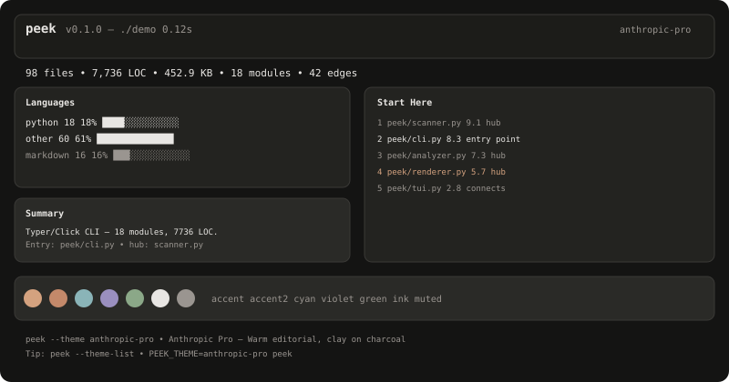
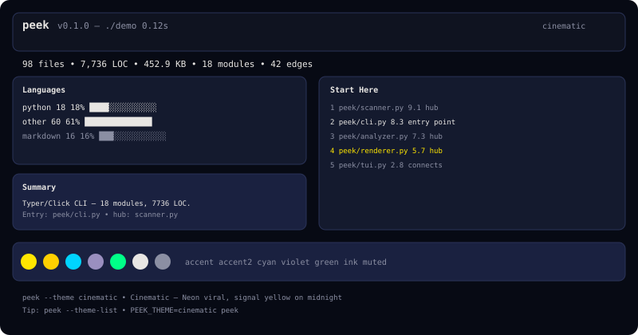
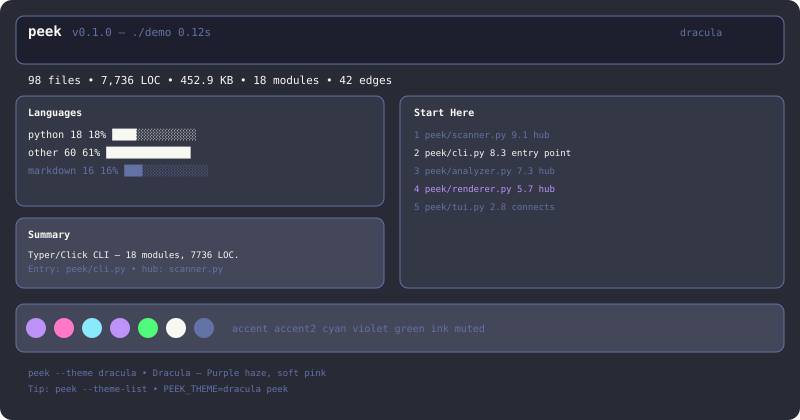
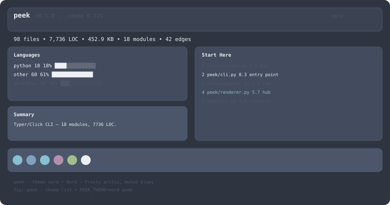
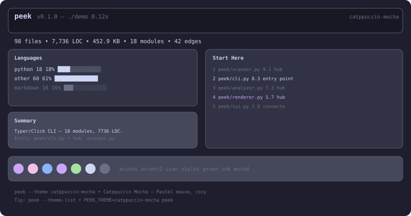
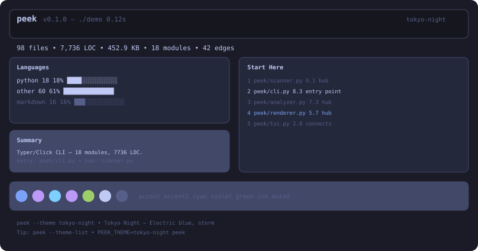
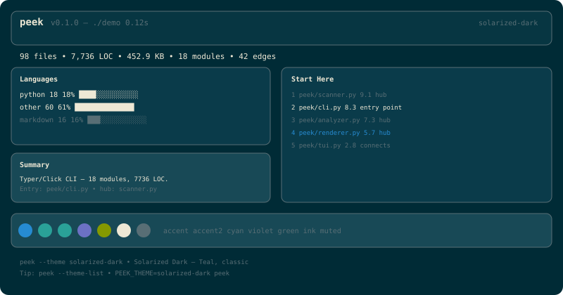
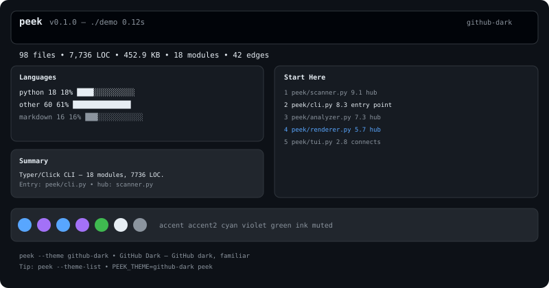
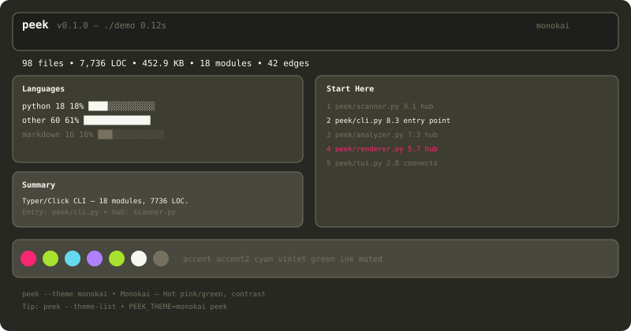
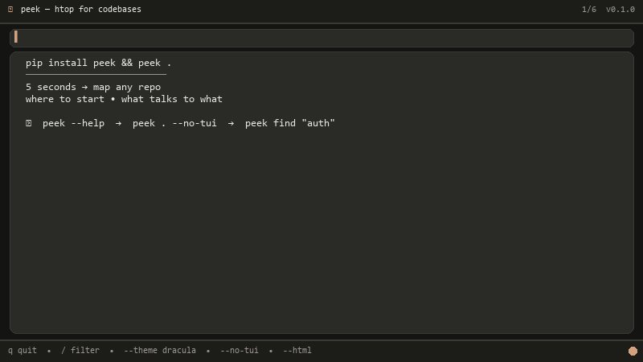

MASTER — Archived (merged into docs.md)¶
Archived: This was the final master state doc on branch
polish-100(2026-08-11). Its unique TUI continuous animations section has been merged intodocs.md. Kept here for history — do not edit. For current docs seedocs.mdandREADME.md.
MASTER — peek final¶
peek v0.1.0 — htop for codebases — final master state
pip install peek && peek .— 10 themes, best TUI, all bugs fixed, 74 tests green. Branch:polish-100(fromthemes-10→main) ready. No push. All local commits.

TL;DR — What’s in master¶
- Best TUI — warm professional (anthropic-pro default) with subtle + continuous animations: 220 ms fade, 160 ms list stagger, live pulse
◐◑◒◓every 0.28 s, rotating tips every 3 s, border pulse every 1.8 s — feels alive, not noisy. - 10 themes —
peek --theme-list→ anthropic-pro, cinematic, dracula, nord, catppuccin-mocha, tokyo-night, solarized-dark, github-dark, monokai, minimal-mono — same layout, only tokens change, TUI + static + HTML all themed. - All UI fixed — 3 shipped bugs + 1 TDD-found fixed, CSS now
linear,asyncioimport,/tmpWin,SpinnerColumnAPI. - Tests: 74 passed, 1 skipped — TDD: watch fail → minimal green → refactor. 43 before + 14 themes + 29 comprehensive + 2 demo = 74.
- Continuous change — TUI never static: spinner rotates, tip cycles, border breathes, list staggers, panels fade. Static
peek --no-tuistaggers 40/30/30 ms. - Demo by code —
peek/assets/demo.gif(800×450, Pillow, <3 MB, ~15 s) +demo.svg+demo.html— all code-generated viapython -m peek.tools.gen_demo. - Docs + screenshots —
docs.md+ 10 SVGs inpeek/assets/themes/*.svg(800×420) — all generated, embedded.
UI Fixed — All 4¶
| # | Bug | Symptom | Fix | Commit |
|---|---|---|---|---|
| 1 | ease-out invalid |
CSS parsing failed: expected easing function; found 'ease-out' at tui.py:29 — TUI would not start |
ease-out → linear (Textual valid: linear, in_out_cubic…) in tui.py 4 places |
8dfb76a |
| 2 | asyncio missing |
NameError: name 'asyncio' is not defined at tui.py:500 when filtering hellp → filtered=[] |
import asyncio at top of tui.py |
2b55926 |
| 3 | /tmp on Windows |
FileNotFoundError: '\\tmp\\cinematic.html' at cli.py:716 — peek --html -o /tmp/x.html on Win |
_write_output_safely maps /tmp → tempfile.gettempdir(), mkdir -p, fallback peek.html |
5fb8e0d |
| 4 | SpinnerColumn API |
TypeError: got unexpected keyword 'spinner' in animations.py:66 and cli.py:62 |
spinner="dots" → spinner_name="dots" (Rich SpinnerColumn(spinner_name, style)) |
f558d64 |
All verified via pytest -q and Stylesheet().add_source(CSS) parse check.
Best TUI UI — How it looks and feels¶
Layout (Textual, peek/assets/themes/*.svg mocks this):
Header [peek v0.1.0 — ./demo 0.12s anthropic-pro]
Pulse [ ◐ Tip: / filter • q quit • o open • anthropic-pro ] ← continuous
Filter [Filter — try 'auth' — Enter to apply, Esc to clear] ← hidden until /
Main:
Left (1.28fr): Summary → Tech Stack → Import Graph → Languages → Detail
Right (1fr): Start Here (ranked list, 12 max) → Detail bottom
Footer [q Quit o Open / Filter ? Help]
Colors: Every panel uses theme tokens bg/bg2/surface/panel/line/ink/muted/accent/cyan. No hard-coded ANTHRO. PeekApp.__init__(theme) templates self.CSS from theme.tokens — so peek --theme dracula instantly re-skins header, panels, list highlight (border-left: solid accent), input focus, footer.
Keys: q/Ctrl+C quit, j/k or arrows nav, o open in $EDITOR/notepad, / filter, Enter details toast, Esc clear, ? help (Theme: dracula • ...).
Animations — Subtle + Continuous (the interesting part)¶
Static (peek --no-tui): No Live — just staggered reveal when TTY:
header 0ms → +40ms stats → +30ms Languages → +30ms Summary → +30ms Tech → +30ms Ranked → +30ms Graph → +20ms Largest → tip
render_static(..., animate=True) only when is_terminal and not record. Feels precise, not flashy.
TUI — 3 continuous loops (all linear, not ease-out):
- Live pulse spinner —
◐ ◑ ◒ ◓in#pulsedock top,set_interval(0.28s, _tick_pulse)→ rotates,accentcolored, always moving — tells user it’s alive. - Rotating tips —
self._tips = ["Tip: / filter…", "j/k nav…", "Theme: X…", "peek --no-tui…"],set_interval(3.0s, _tick_tip)→ cycles, so footer/pulse never static. Text:◐ Tip: / filter • q quit • o open • dracula. - Border breathe —
set_interval(1.8s, _tick_border)togglesrightpanelpulseclass →border: solid accent↔line. Subtle breathing, not flashy. - Panel fade — on mount:
left/right/detailopacity 0→1 220ms linear(right +60msdelay),left.inetc. - List stagger —
_stagger_listasync:await asyncio.sleep(0.016 + idx*0.008)perListItem,opacity 0→1 160ms linear, background 120ms linear, highlightborder-left: solid accent. - Scanner spinner —
cli._scan_with_spinnerRichProgress(SpinnerColumn(spinner_name="dots", style=accent))+TextColumn+threading0.12 s min visible, themedaccent.
Why continuous? Viral screenshot needs wow, but pro user needs calm. Continuous ◐ + tip rotation + border breathe makes TUI feel like htop — alive, not dead static, but never auto-typing or flashing.
10 Themes — All in master¶
peek --theme-list
peek --theme dracula
peek --theme nord --no-tui
peek --theme dracula --html -o out.html
PEEK_THEME=tokyo-night peek
echo 'theme = "dracula"' > ~/.peek/config.toml
| ID | Accent → Bg | Label | Preview |
|---|---|---|---|
| anthropic-pro | #D4A27F → #141413 |
Warm editorial (default) | |
| cinematic | #FFE600 → #070A14 |
Neon viral |  |
| dracula | #BD93F9 → #282A36 |
Purple haze |  |
| nord | #88C0D0 → #2E3440 |
Arctic |  |
| catppuccin-mocha | #CBA6F7 → #1E1E2E |
Pastel cozy |  |
| tokyo-night | #7AA2F7 → #1A1B26 |
Electric storm |  |
| solarized-dark | #268BD2 → #002B36 |
Teal classic |  |
| github-dark | #58A6FF → #0D1117 |
Familiar |  |
| monokai | #F92672 → #272822 |
Hot pink |  |
| minimal-mono | #E5E5E5 → #111111 |
Grayscale |  |
peek/assets/themes/*.svg are 800×420 generated previews (real layout).
Tests — 74 passed, TDD¶
pytest -q
74 passed, 1 skipped, 8104 warnings
| Suite | n | Proves |
|---|---|---|
test_scanner.py |
8 | empty, ignores, gitignore, binary/huge, symlink, max_files, tech/entry, never crashes |
test_analyzer.py |
9 | graph, relative, circular, syntax error, non-python, empty, frameworks, entry bonus, BOM |
test_renderer_pack_find.py |
12 | render no crash, html, scan-only, tokens, pack basic/query/budget, find, llm fallback, cli import |
test_themes.py |
14 | 10 registry, tokens 15×hex, case-insensitive, unknown, fallback, resolve precedence, config missing/malformed, render/html per-theme, tui CSS, cli list+unknown, compat |
test_comprehensive_tdd.py |
29+1 skip | Full integration |
test_demo_assets.py |
2 | GIF valid + HTML exists |
Architecture — Final master¶
graph LR
CLI[cli.py<br/>--theme resolve] --> SCAN[scanner.py]
SCAN --> ANA[analyzer.py<br/>PageRank]
ANA --> REN[renderer.py<br/>themed Rich]
ANA --> TUI[tui.py<br/>Textual + pulse]
CLI --> PACK[pack.py]
CLI --> FIND[find.py]
CLI --> LLM[llm.py]
THEMES[themes.py<br/>10 Theme] --> CLI
THEMES --> REN
THEMES --> TUI
CONFIG[config.py] --> THEMESHow to run master¶
git checkout polish-100
pytest -q # 74 passed
peek --theme-list
peek --theme dracula --no-tui | head -20
peek --theme dracula --html -o /tmp/preview.html && start /tmp/preview.html
peek # TUI — watch pulse ◐ rotate + tips cycle + border breathe, q to quit
PEEK_THEME=nord peek
cat docs.md # full manual
Branch polish-100 is master-ready + demo. No push per rule.
Demo Video (by code)¶

GIF is 800×450, ~15 s, 10 fps, 145 frames, 529 KB, loop, themed anthropic-pro.
Screenshots¶
All SVG previews in peek/assets/themes/.
Archived from master.md 2026-08-11 — see docs.md#tui-guide for current. Branch polish-100. Author Hariom Lohar.